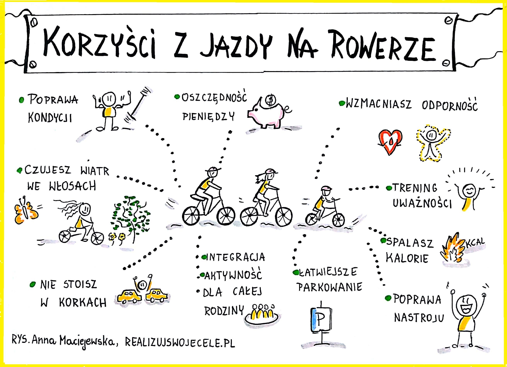
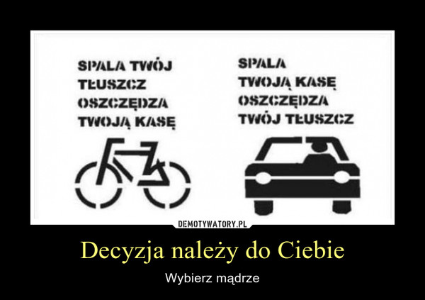

Podróże rozwijają nas [...]
Zapewne większość z nas ma swoje zainteresowania - coś co lubi robić i czerpiąc z tego nie małą radochę :)
Skoro tu trafiłeś(aś) to wprowadzę Cię w swoje hobby - Podróże te małe i te duże ^^
Spis treści:
Podróże jako sposób na rutynę - nudę
Siedzenie dzień w dzień przed kompem albo telewizorem sprawia,że zasypiasz,nudzisz się albo popadasz w depresje? :D
Jest na to darmowy lek i nazywa się on aktywność fizyczna. Wszystko to co czytasz na tej stronie internetowej
jest sprawdzone i oparte o własne doświadczenia.
Wszystko zależy od Twoich chęci oraz finansów.
Przede wszystkim warto wspomnieć,że podróże nie muszą nas obciążać finansowo lecz kosztem jaki ponosimy jest jedynie
nasz czas,a w zamian możemy otrzymać wiele radość i z powodu tego co nam się przydarzy niespodziewanego.
Po wyruszeniu z domu się nieraz okaże,że spotkamy swoich znajomych,z którymi się chwilę nie widzieliśmy i
z pewnością już sama rozmowa z kimś nam poprawi humor.
Kolejnym przykładem są przypadkowi ludzie,którzy z różnych powodów uśmiechną się do nas czy po prostu nas zaczepią
Warto wspomnieć,że wiele osób ćwiczy regularnie na świeżym powietrzu,a także istnieją kluby sportowe,których to
uczestników również da się zobaczyć,a nóż widelec coś nas pociągnie aby się do takiego klubu zapisać ? :)
Na terenie Białej Podlaskiej znajduje się klub rowerowy,którego nie jestem członkiem aczkolwiek nieraz widuję tych ludzi w akcji
gdzie wspólnie grupą kilkuosobową przemierzają kilometry w obmyślone przez nich ciekawe trasy.
.jpeg)
Aspekt zdrowotny

Czy trzeba się dużo rozpisywać?
Jak widać wiele dobrego wnosi do naszego życia chociażby jazda rowerem. Nie musi to być dzień w dzień aczkolwiek myślę,że
dotarcie do sklepu w porównaniu do spaceru zajmuje nam mniej czasu przy jednakowym treningu mięśni nóg.
Kolejnym dobrym przykładem jest obrazek poniżej :D

Podsumowanie
Najzwyczajniej w świecie podróże rowerem przynoszą ze sobą wiele korzyści wspomnianych na obrazkach powyżej - mi jazda rowerem poprawia humor :)
Wychodząc z domu na rower możemy natrafić na nowych ciekawych ludzi podzielających nasze hobby-zainteresowania,poznajemy nowe odległe punkty turystyczne,miejsca do biwakowania - możemy wjechać rowerem tam gdzie autem nie wjedziemy teoretycznie.

Do zobaczenia na drodze / szlaku rowerowym :)
Pozdrawiam